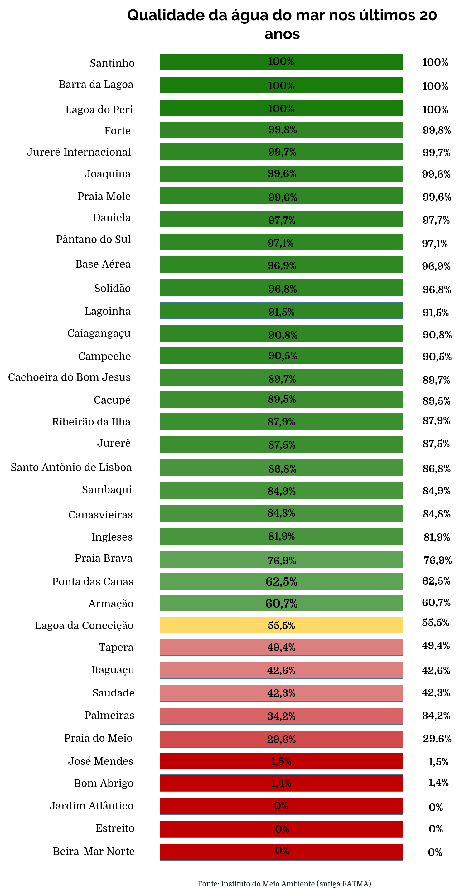

Bactérias e viroses não são os únicos riscos em praias poluídas
As pesquisas de balneabilidade da Fundação Catarinense do Meio Ambiente (FATMA), que são realizadas desde 1998 em Florianópolis, revelam que somente três praias da capital não sofreram degradação ambiental nos últimos 20 anos. Eleita pela revista Viagem e Turismo como “melhor destino turístico do Brasil” e “melhor destino de praia” de 2018, a cidade tem como principal cartão postal seus balneários, mas não consegue garantir a saúde ambiental de seus rios e mares.
A balneabilidade das praias de Florianópolis é medida através de exames bacteriológicos. Coletada a 100 metros de profundidade, a água dos balneários permanece durante 24 horas em processo de análise. A pesquisa procura a Escherichia coli, bactéria da flora intestinal de seres humanos que está relacionada à presença de esgoto no meio-ambiente.
Uma praia é considerada própria quando, em 80% ou mais de um conjunto de amostras coletadas, no mesmo ponto, forem encontradas no máximo 800 Escherichia Coli por 100 mililitros de água. Quando este valor é maior, a probabilidade dos banhistas desenvolverem doenças relacionadas à contaminação fecal se torna alta, e a região recebe a sinalização de imprópria para banho.
Em Florianópolis, somente Santinho, Barra da Lagoa e Lagoa do Peri se apresentaram como 100% próprias nos últimos 20 anos. De acordo com o Marlon Daniel da Silva, diretor de pesquisas da FATMA, a principal razão para as praias terem pouca presença da Escherichia coli é o fator de diluição dos balneários. “Mares abertos e agitados dispersam a bactéria que chega com o esgoto ou com a sujeira das ruas”, explica o diretor. Por outro lado, a Lagoa do Peri, de água doce, tem uma gestão ambiental rigorosa que garante a proteção ambiental do local.
Três praias na Baía Norte de Florianópolis foram consideradas impróprias durante os últimas duas décadas de pesquisas de balneabilidade. Elas estão localizadas nos balneários que apresentam a urbanização mais antiga da capital catarinense: Beira-Mar Norte, Jardim Atlântico e Estreito. A situação também é preocupante em áreas de intenso turismo, como Lagoa da Conceição, Armação e Ponta das Canas. Praias que estão crescendo demograficamente e no turismo como Ribeirão da Ilha, Campeche e Sambaqui apresentaram um histórico negativo na qualidade da água nos últimos anos.
“A ação da Casan, em relação ao histórico de balneabilidade, é somente de forma pontual. As soluções são paliativas, não permanentes. Se estamos na temporada e sai o resultado negativo, ela vai lá com a Vigilância Sanitária, “tapa algumas bocas de lobo” e arruma algumas fossas. Se o teste seguinte apresenta a água como própria, ela não faz mais nada”, diz Silva.
Efeitos são pouco conhecidos
A coordenadora do curso de oceanografia da UFSC, Juliana Leonel, alerta que a pesquisa de balneabilidade da FATMA é fundamental para entender se os corpos d’água recebem esgoto, mas que a Escherichia coli é somente um dos fatores prejudiciais a saúde das pessoas e da vida marinha dos locais. “Junto com o esgoto vem uma série de outros materiais sintéticos: de produtos de higiene básica a remédios que ingerimos e são liberados pela urina”, explica. A pesquisadora aponta que muitos são assimilados por peixes, que depois são pescados e servidos para alimentação.
O Departamento de Engenharia Química da Universidade Federal de Uberlândia (UFU) investiga o impacto dos produtos sintéticos, chamados “compostos emergentes”, em animais e seres humanos. O engenheiro químico Lucas Mendes Vieira, pesquisador da UFU, aponta que a principal alteração que esses produtos ocasionam são no sistema endócrino dos organismos. Algumas das reações comprovadas são a feminização de anfíbios, redução na contagem de espermatozóides em homens, aumento no risco de câncer de mama e menstruação precoce em mulheres.
“São muitos os compostos que atingem praias e rios com o esgoto, e conhecemos parcialmente os problemas. Eles foram produzidos pela indústria e muitas vezes não temos ideias do dano que a maior parte dos produtos traz ao meio ambiente. Mas isso tudo não aparece do teste de balneabilidade”, alerta Juliana Leonel. Para medir se um local está com problemas relacionado a compostos emergentes, o pesquisador sugere investigar a quantidade de cafeína presente nos rios, pois ela já possui comprovações sobre os efeitos no metabolismo hormonal de seres humanos. “Pode-se dizer que onde existe cafeína, há uma grande variedade de outros compostos que não são monitorados, mas que podem trazer prejuízos à saúde humana”, indica.
A poluição dos rios e dos mares de Florianópolis, além de afetar a saúde de moradores, é uma preocupação para o desempenho do turismo na cidade. Na capital catarinense, a atratividade turística está nos recursos naturais abundantes, principalmente nas 42 praias da região. Atualmente, 30% do PIB do município está relacionado aos serviços de turismo.
Em pesquisa, o economista Renzo Meirelles, aponta que, ao invés de gerar consciência ecológica entre a população, o modelo de turismo local causou danos ambientais relevantes, pois a cidade não possui infraestrutura suficiente. Para Meirelles, o desenvolvimento do turismo na capital de Santa Catarina “é induzido por meros interesses particulares envolvendo a classe política e os empresários do setor, que o direcionam e o definem”.
A gerente em saúde ambiental da Vigilância Sanitária, Priscila Valler, afirma que muitos negócios da cadeia do turismo do município, ao invés de contribuírem para manter Florianópolis como um destino de praia desejado no Brasil, estão irregulares com seus esgotos. “Pousadas que dobraram seu tamanho sem alterar o sistema de esgoto, restaurantes que colocam efluentes na rede de água da chuva, hotéis que não possuem caixa de gordura. Aqueles que deviam ser os mais interessados em manter as praias balneáveis, estão contribuindo para os problemas de saneamento que temos hoje”, denuncia.